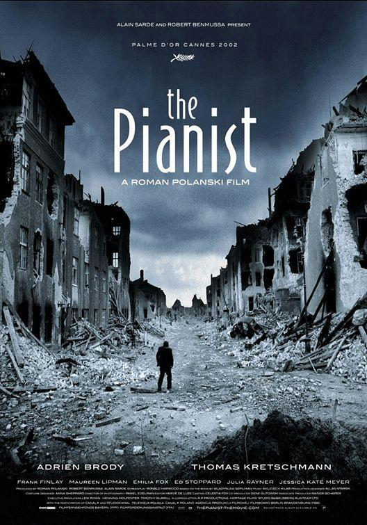

Muy buenas peliculas
| Regreso al futuro | ||
| La naranja mecánica | Stanley Kubrick (Novela: Anthony Burgess) 1971 | |
 |
La lista de Schindler | Steven Spielberg 1993 |
 |
Pulp fiction | Quentin Tarantino 1994 |
 |
La vida es bella | Roberto Benigni 1997 |
 |
Black Mirror (TV Series) | Charlie Brooker (Creator), Owen Harris, Carl Tibbetts, Otto Bathurst, Euros Lyn, Brian Welsh, Bryn Higgins, James Hawes, Dan Trachtenberg, Jakob Verbruggen, James Watkins, Joe Wright, Jodie Foster, Toby Haynes, John Hillcoat, David Slade, Timothy Van Patten, Colm McCarthy 2011 |
|  | El pianista | Roman Polanski 2002 |
 |
El resplandor | Stanley Kubrick 1980 |
 |
Blade Runner | Ridley Scott 1982 |
| Taxi Driver | Martin Scorsese 1976 | |
| Trainspotting | Danny Boyle 1996 | |
 |
Intocable | Olivier Nakache, Eric Toledano 2011 |